Director of Design & UX
At Moz I led the creative department: a team of 6 covering everything UX and design for the company, across both product and marketing. The team included a Creative Director, a UX Architect, two UX Designers, a Motion Designer, and a Graphic Designer.
I set the direction, and often detailed ideas, for the work below, while most of the hands-on design was done by my very talented team. I also put in place the design process the team worked by, including weekly design meetings, one focused on projects and one on innovation.
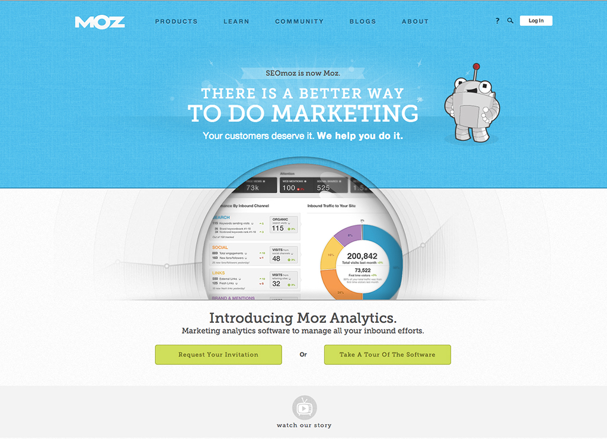
The redesigned front page, shown at the top of this page, introduced Moz Analytics and announced that SEOmoz was now Moz. We ran extensive A/B tests on variations of it, such as this alternate design:
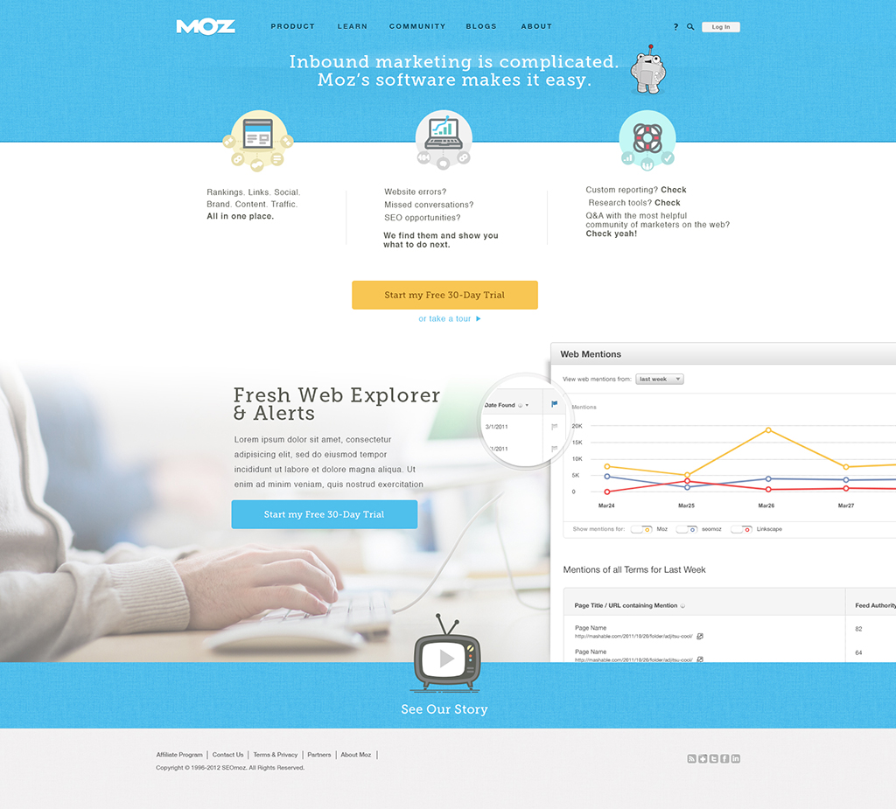
The product page concept supports both direct and scenario-based product selection: pick an answer, and the products that apply are highlighted below.
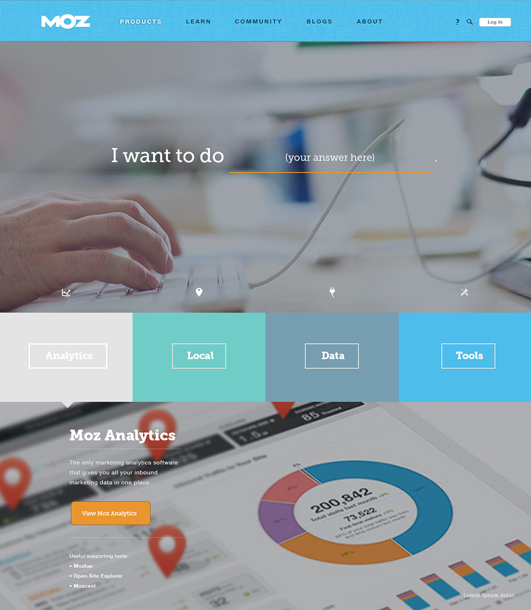
An alternate product page design used in A/B testing:
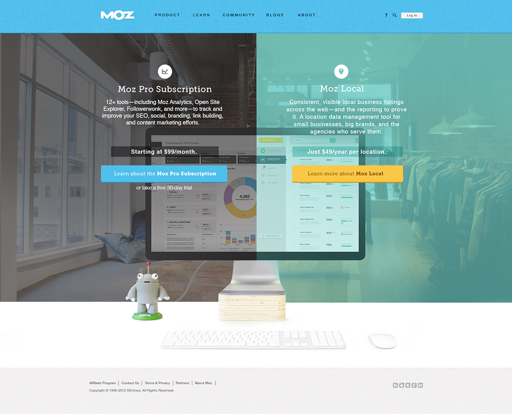
We created the product branding and home page for Moz Local.
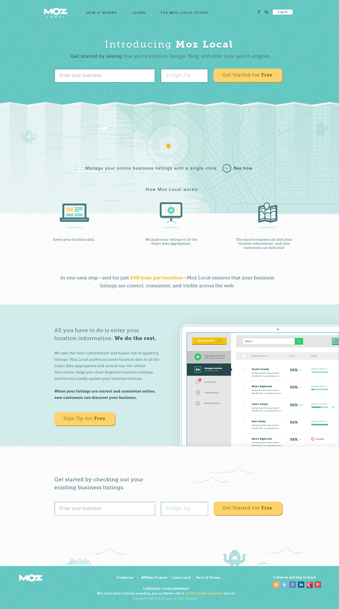
As with every Moz product, a lot has to happen before data is gathered and insights appear. We used several ways to bridge that gap, from introductions and setup wizards to inline messages for sections without data yet and email notifications. And, as always at Moz, each experience had just the right level of humor and fun.
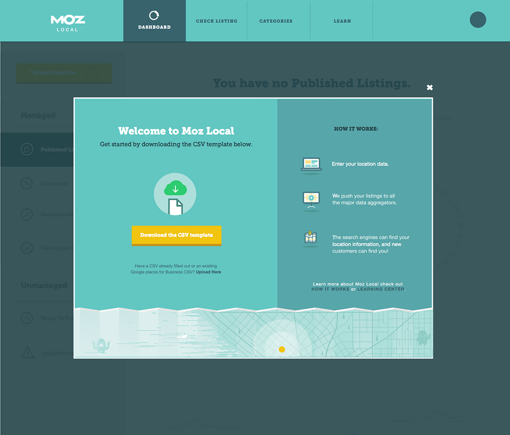
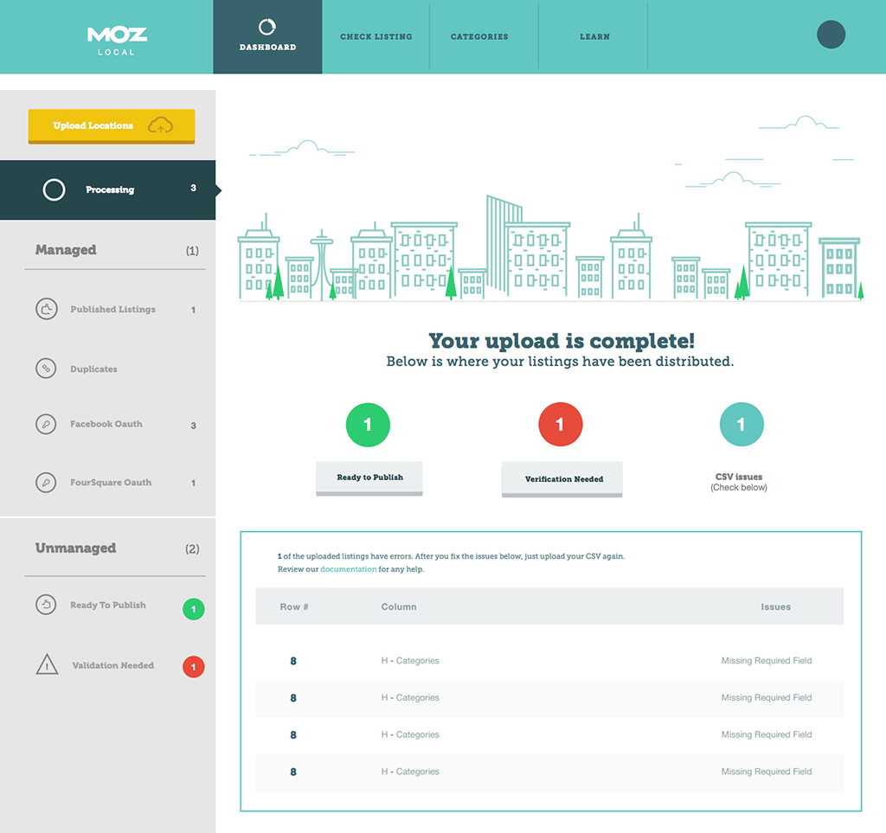
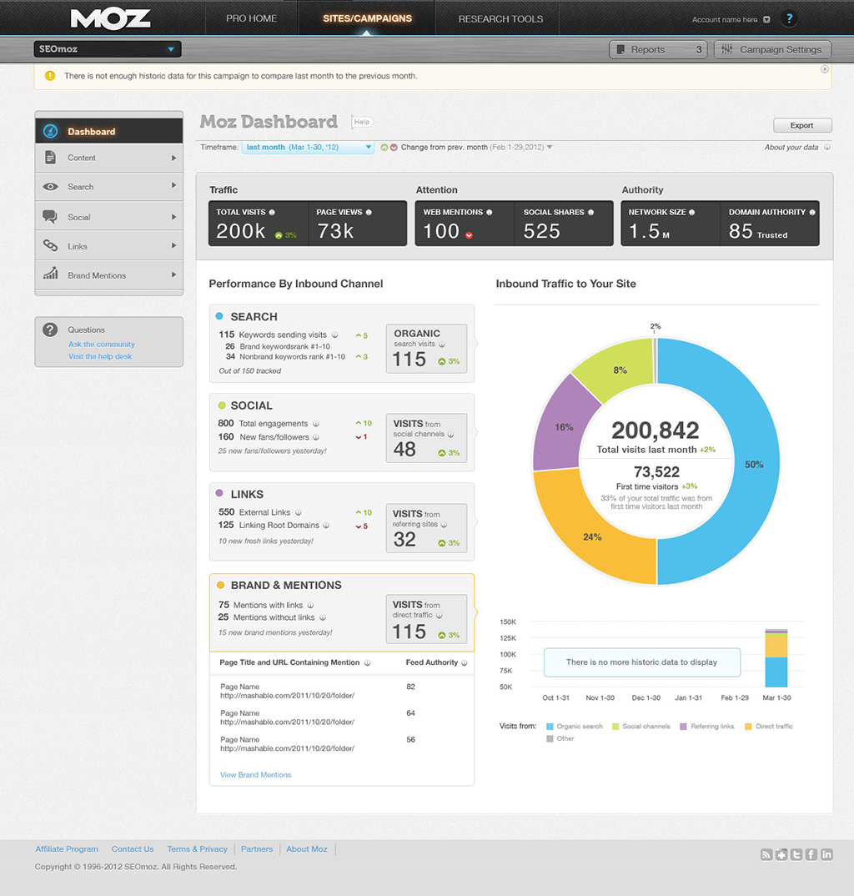
For the dashboard redesign we explored an edgy concept, then only partly went that route, scaling back the more experimental data visualization to focus on comprehension.
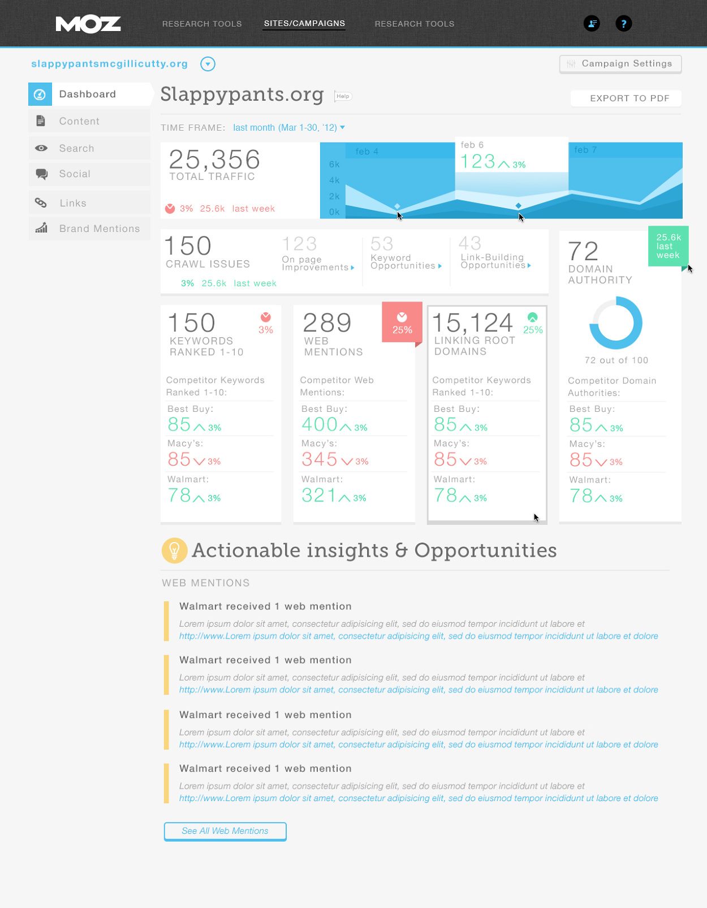
Users needed data and actionable insight as quickly as possible, so we greatly improved the setup wizard to gather all the necessary data from them early.
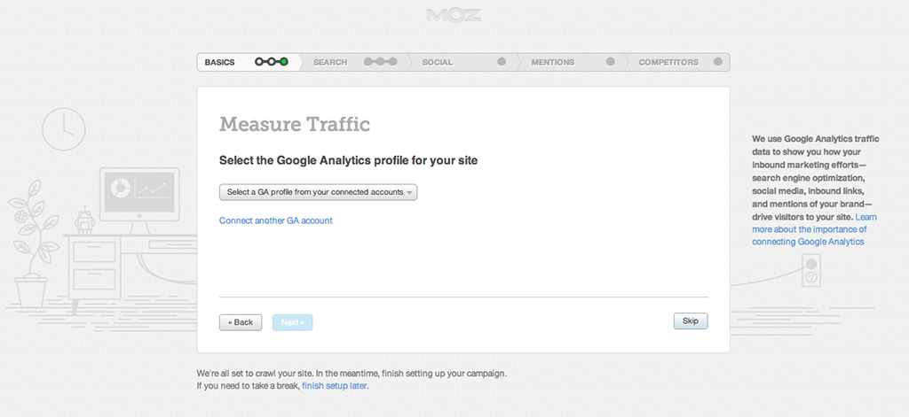
We came up with the concept of mini-wires: very lightweight wireframes with just enough detail to iterate with every discipline on task flow and information architecture, but not so much that reviews turn into discussions of small UI details. The UX Strategist on the team evolved them into a very useful tool.
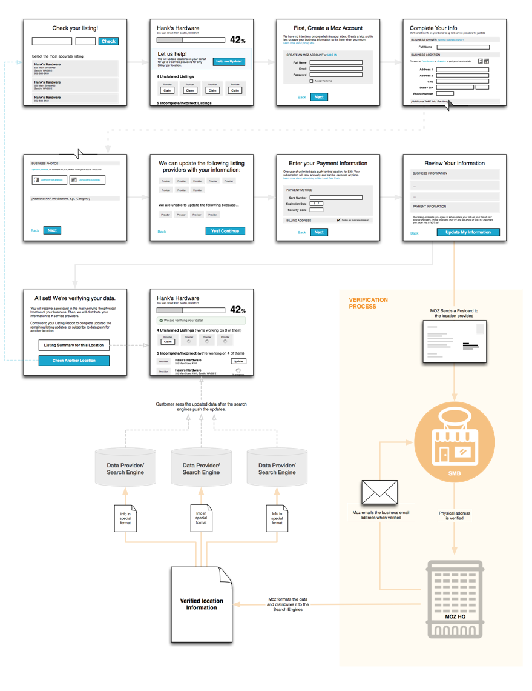
About half of my team created a large volume of marketing materials, from ad banners, sites, and whitepapers to physical things like clothing and dolls of Roger, the Moz mascot. The team even contributed significantly to the interior design of the new Moz office.
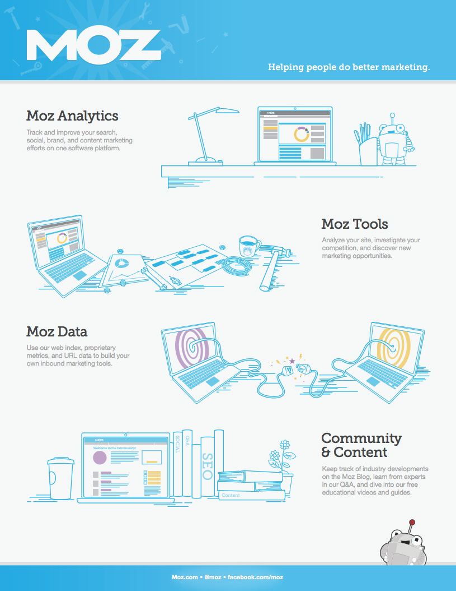
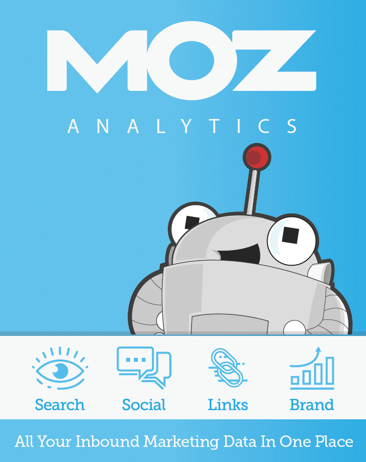
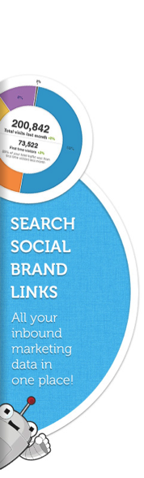
"It's not often you have a manager that effects a company in such a positive way as Daan did at Moz. He really cares about the people on his team and went out of his way to ensure that we all grew as professionals. Daan put in place a design process that we still use here at Moz."
"Daan set a process in place that allowed us to easily manage our goals and pushed us to be the strong voice of design. He has the ability to nurture the skills that someone has and guide them in the right direction. His feedback and leadership helped me develop as an individual."
"He put a process in place that empowered us to manage our projects and make time for innovation. One of my favorite things he brought was our weekly design meetings: one project focused and one innovation-minded. This practice encouraged us to share our work and push each other. I miss Daan's leadership and would welcome the chance to work with him again."